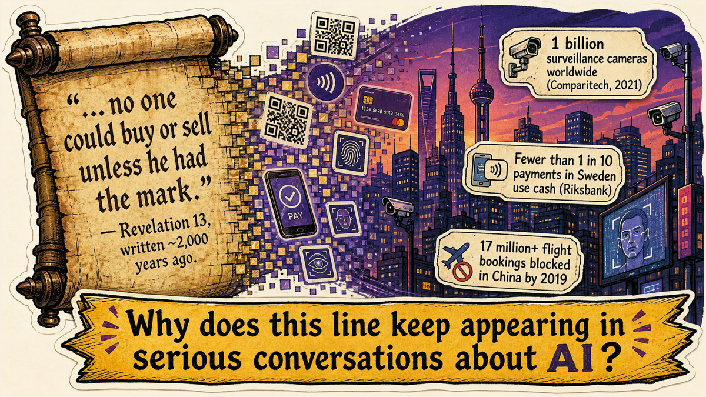
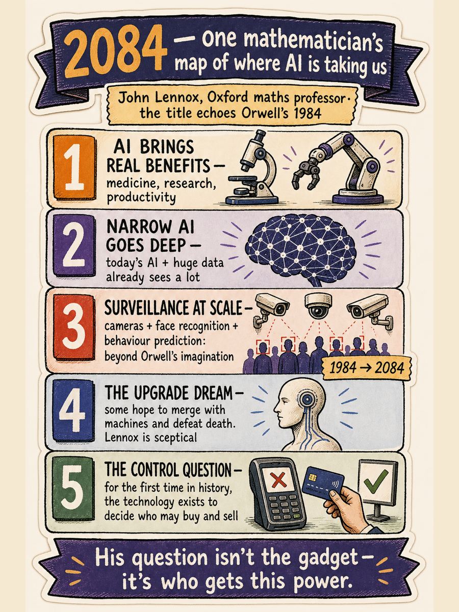
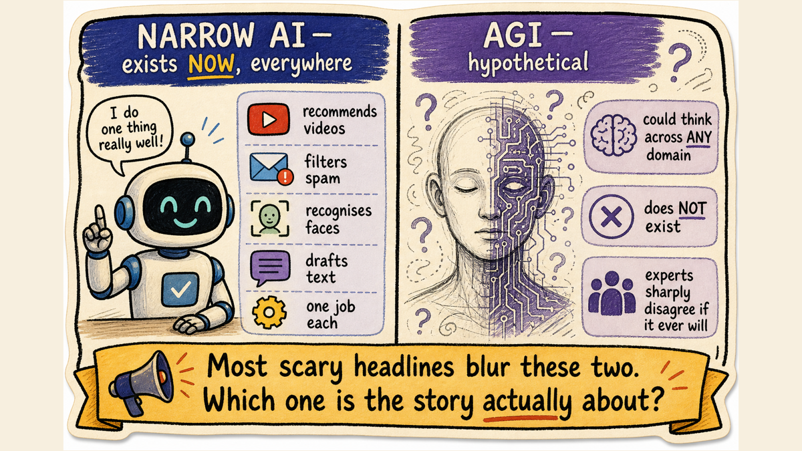
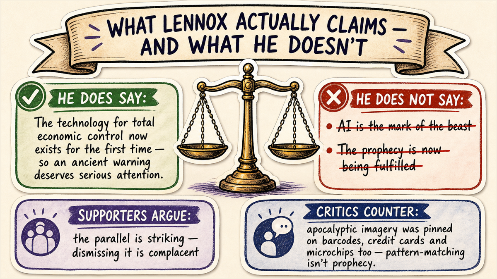
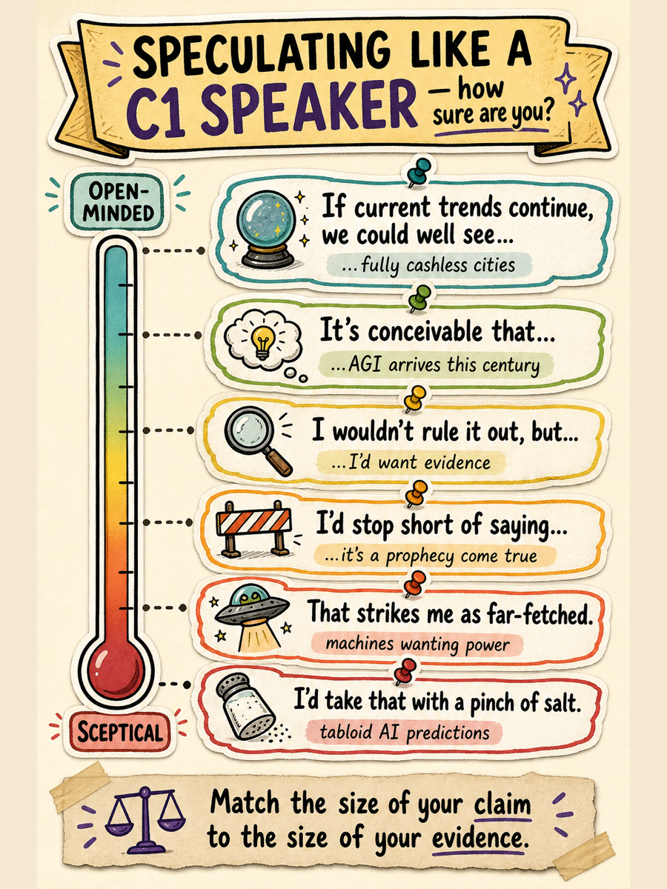
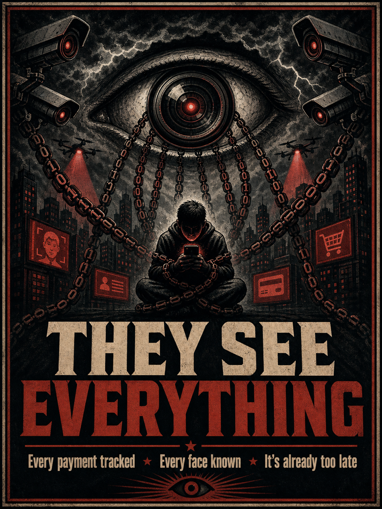
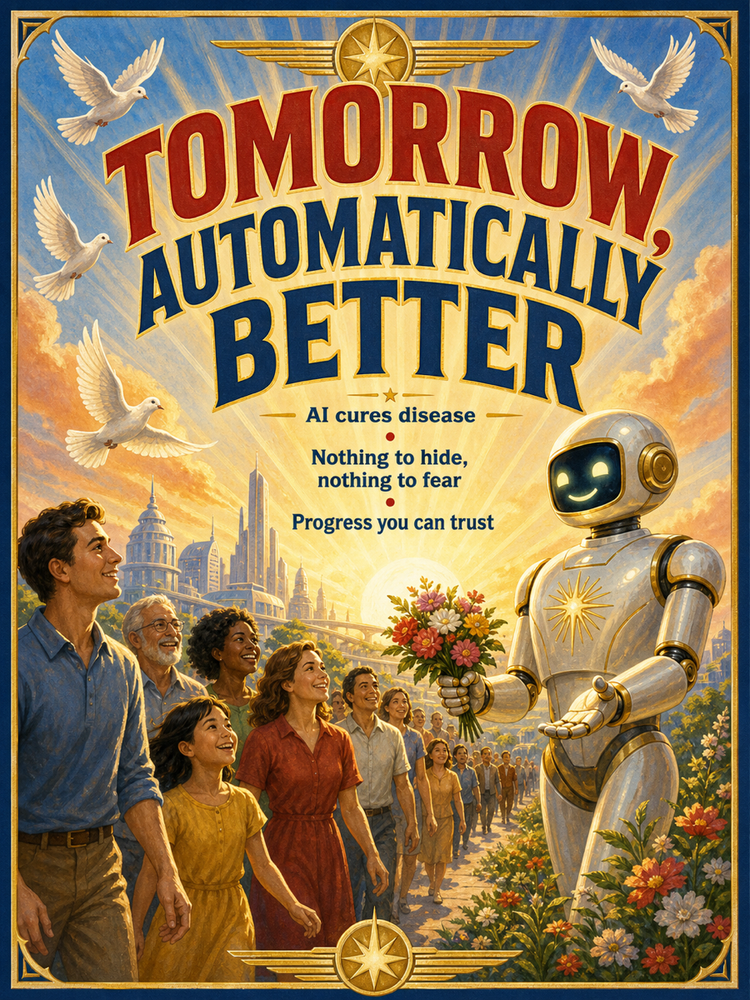

C1 Level · Discussion & Analysis · English
Today we're exploring one writer's argument about where AI is taking us, so you can evaluate speculative claims and respond with precise, well-hedged English.
No notes, no searching — just say whatever surfaces. There are no wrong answers here.
SPEAK: Guess before you click. Is this from a tech journalist? A science-fiction novel? A government report? When was it written?
It's almost 2,000 years old — from the Book of Revelation, the last book of the Bible, describing a future power that controls who may buy and sell.
Whatever your view of religion, here's today's puzzle: why does a 2,000-year-old line keep coming up in serious conversations about artificial intelligence?

surveillance cameras estimated worldwide — over half of them in one country, China
Comparitech estimate, 2021
payments in Sweden are now made with cash
Sveriges Riksbank
flight bookings blocked in China for people on "discredited" court lists by 2019
reported state figures
users reached by ChatGPT in just two months — the fastest-adopted app in history at the time
UBS analysis, 2023
In 2020, John Lennox — an emeritus professor of mathematics at Oxford — published 2084: Artificial Intelligence and the Future of Humanity (updated in 2024). The title deliberately echoes George Orwell's 1984, the classic novel about total surveillance. Lennox writes from a Christian perspective, but he engages scientists and philosophers directly — and you don't need to share his beliefs to weigh his arguments. That's exactly what we'll do.

Does one job well: recommends videos, filters spam, recognises faces, drafts text. It exists now, everywhere.
A hypothetical machine that could think flexibly across any domain, like a person — or beyond. It does not exist. Experts disagree sharply on whether it ever will.
Lennox's point: most headlines blur these two. Fears about one aren't automatically fears about the other.

Thinkers like historian Yuval Noah Harari (Homo Deus) describe a project to upgrade humans — merging with machines, defeating ageing, chasing a kind of technological immortality. Lennox is deeply sceptical: he argues this is both less achievable and less desirable than its fans claim.
Put three existing technologies together — mass surveillance (cameras + face recognition), cashless payment systems, and AI that scores behaviour — and you get something new in history: the technical ability to monitor a whole population and decide, automatically, who may travel, borrow… or buy and sell. China's social credit experiments show early versions of this in practice.
This is where the quote from Tab 1 returns. Revelation 13 imagines a future regime in which "no one could buy or sell" without its mark. Lennox observes that, for the first time ever, the technology to enforce that kind of total economic control actually exists.
Careful — this is the nuance most headlines miss. Lennox does not say "AI is the mark of the beast." His claim is more modest: an ancient warning about centralised control has become technically possible for the first time, so it deserves serious attention.
Supporters argue the parallel is striking and that dismissing it is complacent. Critics counter that apocalyptic imagery has been mapped onto every new technology for decades — barcodes, credit cards, microchips — and none of those turned out to be the end of the world.

SPEAK your answers before revealing: 1) What's the difference between narrow AI and AGI? 2) What does Lennox actually claim about the "mark of the beast" — and what does he not claim?
1) Narrow AI does one task and exists now; AGI would think generally across domains and remains hypothetical.
2) He claims the technology for total economic control now exists, which makes an ancient warning newly relevant — he does not claim AI is itself the mark of the beast or that the prophecy is now being fulfilled.
Big claims deserve careful language. These six expressions let you agree, doubt, and hedge like a thoughtful C1 speaker:

"Is AI dangerous? Well, I'd stop short of saying it's an existential threat, but it's conceivable that governments could misuse it. If current trends continue, we could well see payment systems that can simply switch a person off. Total control by machines themselves, though? That strikes me as far-fetched — for now."
SPEAK: Notice the shape before revealing: what does the speaker do first, second, third?
Limit the claim → concede a real risk → ground a prediction in evidence → reject the extreme version. Four moves, four hedging expressions. That structure works for almost any speculative question.
Rank these five predictions together, out loud. Defend every placement with a toolkit expression — and challenge each other's order.
SPEAK: "Will any technology ever give someone the power to control who can buy and sell?" Speak for the full minute and use at least two toolkit expressions.
1. Someone announces: "By 2030, AI will replace every teacher on Earth." You think this is very unlikely.
2. You half-agree that a cashless society is coming — the evidence points that way.
3. A discussion partner insists today's chatbots are truly conscious. You want to disagree — politely but firmly.
4. A friend quotes a dramatic AI prediction from a celebrity gossip website.
Use the toolkit from Tab 3 — hedge, concede, predict, reject extremes. Start the timer when you begin a card.
Every convenient technology — cards, phones, face ID — also makes surveillance easier. Where is your personal line? What convenience would you refuse on principle?
Why do old warnings — Revelation, 1984, Frankenstein — keep being applied to new technology? What human need do these stories meet? Are they wisdom, or just fear in costume?
If AI systems can influence who buys, sells, travels or borrows — who should control those systems? Governments? Companies? International law? Nobody?
If a safe implant offered you perfect memory, would you take it? And if death ever became optional for the rich, what — if anything — would humanity lose?
Would you be comfortable living in a 100% cashless country? What would have to be true — legally, technically — for you to trust such a system completely?
Lennox says the technology for total economic control now exists, so an ancient warning deserves attention. Is noticing that vigilance — or fear-mongering? Where's the line between the two?
Round 1 — SPEAK FOR the motion (2 minutes). Build your strongest case. Then…
Round 2 — SPEAK AGAINST it (2 minutes). Argue the opposite as if you sincerely believed it — the strongest version, not a weak copy.
Both of these posters are trying to manipulate you — in opposite directions. Neither is honest.


SPEAK: Explain Lennox's argument about AI and the "mark of the beast" to someone who has never heard of him — in under a minute, being fair to him AND to his critics. (Remember Idea 5: precision about what he does and doesn't claim.)
Three of these are examples of technology used to monitor or control behaviour. One is simply a helpful narrow AI. Which is the odd one out?
SPEAK: Explain why the odd one out is different — and why the distinction matters for today's whole discussion.
Write 4–6 sentences answering: "Should we be worried about where AI is taking us?" Use at least two hedging expressions from Tab 3. Write first — then compare with a model.
"I'd stop short of saying we're heading for a dystopia, but some concern seems rational. If current trends continue, we could well see payment and identity systems merge into something no one can opt out of. It's conceivable that such power stays in responsible hands — though history gives us reasons for doubt. The apocalyptic headlines I'd take with a pinch of salt; the quiet growth of surveillance I would not. In short: not panic, but attention."
Check your own text: Did each sentence make a claim of the right size — not bigger than your evidence? Which of your sentences is the strongest, and why?
Say your answers out loud first. Reveal only after a genuine attempt — the struggle is the point.
Give three different ways to talk about the future in English with different levels of certainty — from "almost sure" to "very unsure".
For example: "It's bound to happen" (near-certain) → "It's likely to / will probably happen" (probable) → "It could conceivably happen" or "I doubt it will happen" (unsure/sceptical).
What's the difference between "I'd stop short of saying X" and "I'd rule out X"?
"I'd stop short of saying X" = I go part of the way but won't fully commit to X. "I'd rule out X" = I reject X completely. The first hedges; the second closes the door.
Give two polite ways to disagree with someone in a discussion — without saying "you're wrong".
For example: "I see where you're coming from, but…" / "That's a fair point, though I'd look at it differently…" / "I take your point — my hesitation is that…"
1) e.g. the technology for total economic control (surveillance + cashless payments + AI scoring) now exists for the first time, which makes an ancient warning newly relevant. 2) e.g. apocalyptic imagery has been attached to barcodes, credit cards and microchips before — pattern-matching isn't prophecy. 3) Any two of: conceivable / wouldn't rule it out / strikes me as far-fetched / stop short of saying / could well see / pinch of salt. 4) Yours — as long as the claim matches your evidence.
…evaluate a speculative claim about AI and respond with precise, well-hedged English. Can you? What's your evidence from the last hour?
SPEAK: Which activity sharpened your thinking most — the ranking, the debate, or the discussion cards? What does that tell you about how you learn best?